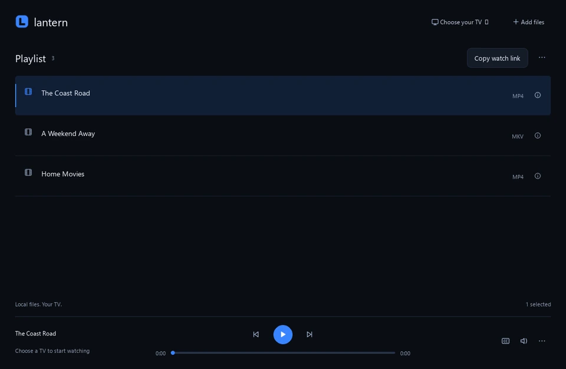

Stream your own media
Play videos and music from your Windows PC over your home network. Local playback needs no Lantern account or cloud upload.
Stream videos from your Windows PC to the TV over your home Wi-Fi. No account or cloud upload required.
Open source Development preview

How it works
The first time you use the Lantern receiver, pair it with the code on your TV. After that, Lantern remembers it.
Add a file to your Lantern playlist on Windows. Queue up the next one while you’re there.
Open the Lantern receiver on your TV. Choose it on your PC and enter the six-digit code on screen.
The video plays over your home network. Use your TV remote to pause, seek, or switch captions with the Lantern receiver.
Built-in speech-to-text
Lantern uses Whisper to transcribe video audio on your Windows PC. It supports English and Hindi, and works offline after the first model download. Your audio stays on your PC.
Lantern can also find nearby SRT or WebVTT files and extract embedded text tracks. Optional cloud transcription uses your own Deepgram API key.
Read the subtitle guidePlay videos and music from your Windows PC over your home network. Local playback needs no Lantern account or cloud upload.
Reorder your playlist on Windows or from the Lantern receiver. Use your TV remote to pause, seek, switch captions, or adjust picture fit.
Copy a watch link for a video in your playlist. Open it in a browser on the same home network, with seeking and attached text subtitles.
How watch links workPaste a public HTTPS HLS or MP4 link into Lantern. With Firefox installed, Lantern can also detect compatible streams on supported watch pages.
See supported sourcesCompatibility
You’ll need a Windows 10 or 11 x64 PC and a compatible TV or Cast device on the same home network.
You can add common video and audio formats including MP4, MKV, WebM, MP3, and FLAC. Playback depends on the codecs your device supports. See the media guide.
Yes. Keep your PC awake and Lantern running while you watch. If you close the window while connected, Lantern can keep running in the system tray.
Development preview
Build the Windows app and the optional TV receiver from the open-source project.